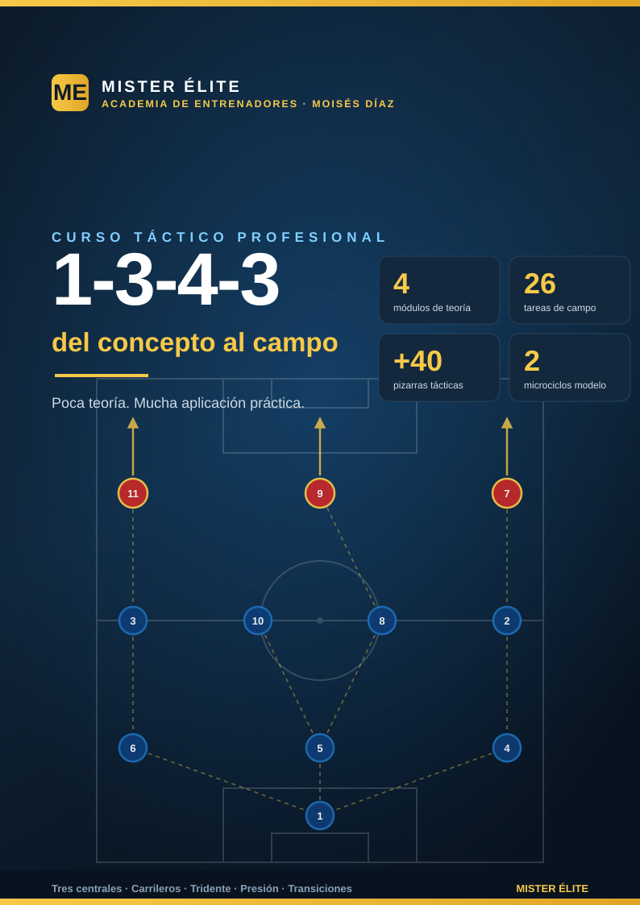

Sistema 1-3-4-3: del concepto al campo
MISTER ÉLITE — Academia de entrenadores · Moisés Díaz
Poca teoría. Mucha aplicación práctica.
Curso completo del 1-3-4-3: el sistema de tres centrales, carrileros y tridente que muta con balón a 1-3-2-5 y sin balón a línea de 5 (1-5-2-3 / 1-5-4-1). Cuatro módulos de teoría breves y un banco de 26 tareas de campo listas para el entrenamiento, con su pizarra cada una.
¿A quién va dirigido?
A entrenadores y segundos entrenadores que quieran implantar el 1-3-4-3 en el campo, no solo entenderlo sobre el papel. Sirve para fútbol formativo (a partir de categorías donde se juega 11v11) y fútbol amateur/semiprofesional. No necesitas un máster en táctica: cada concepto teórico viene con su traducción práctica inmediata.
Objetivos del curso
Al terminar, el entrenador será capaz de:
- Entender la mutación que define el sistema: 3-4-3 ↔ 3-2-5 con balón, línea de 3 ↔ línea de 5 sin balón.
- Construir desde atrás con superioridad de primera línea (3 centrales + portero-líbero + pivote).
- Defender en bloque con la línea de 5, las coberturas escalonadas y el pressing orientado del tridente.
- Atacar con amplitud máxima vía carrileros y tridente, ocupando los cinco carriles.
- Gestionar las transiciones, la fase más crítica del sistema (carrileros arriba).
- Diseñar microciclos que integren todos los comportamientos del sistema.
Cómo está organizado
El curso tiene tres partes:
- Teoría (4 módulos) — concisos, con "Ideas clave" y "Errores comunes" al final de cada uno.
- Práctica (banco de 26 tareas) — repartidas en 6 bloques + un plan de sesiones con 2 microciclos modelo.
- Recursos — convención de dorsales, distancias, leyenda de pizarras, glosario e índice de diagramas.
Cada tarea sigue una ficha uniforme: Objetivo · Organización · Desarrollo · Provocaciones · Variantes · Coaching · Duración/Categoría, y lleva una pizarra.
Índice
Teoría
- Módulo 01 · Fundamentos y estructura
- Módulo 02 · Fase defensiva
- Módulo 03 · Fase ofensiva
- Módulo 04 · Transiciones y balón parado
Práctica
- Plan de sesiones · 2 microciclos modelo
- Bloque 1 · Salida con 3 centrales + pivote (T1.1–1.5)
- Bloque 2 · Línea de 3 ↔ línea de 5 (T2.1–2.4)
- Bloque 3 · Pressing del tridente + gatillos (T3.1–3.4)
- Bloque 4 · Carrileros y amplitud / mutación (T4.1–4.5)
- Bloque 5 · Tridente (T5.1–5.4)
- Bloque 6 · Transiciones + partido condicionado (T6.1–6.4)
Recursos
Convención de dorsales (obligatoria en todo el curso)
Estructura: portero + 3 centrales + 4 medios (2 carrileros + 2 mediocentros) + 3 delanteros (2 extremos + 1 punta).
| Dorsal | Posición | Abrev. | Matiz de rol |
|---|---|---|---|
| 1 | Portero | POR | Hombre libre / portero-líbero, manda la línea de 3 |
| 2 | Carrilero derecho | CAR | Recorre toda la banda derecha: defiende y da amplitud en ataque |
| 3 | Carrilero izquierdo | CAR | Recorre toda la banda izquierda: defiende y da amplitud en ataque |
| 4 | Central derecho | DFC | Marca/cobertura; sale a presionar por su lado, puede conducir |
| 5 | Central / líbero | DFC | El central del medio: organiza la línea de 3, líbero/coberturas |
| 6 | Central izquierdo | DFC | Marca/cobertura; sale a presionar por su lado, puede conducir |
| 8 | Mediocentro (pivote) | MC | Ancla posicional por delante de la línea de 3; equilibrio |
| 10 | Mediocentro ofensivo | MC | Box-to-box / creación; recibe entre líneas y llega al área |
| 7 | Extremo derecho | ED | Amplitud o pisar por dentro; ayuda defensiva al carrilero |
| 9 | Delantero centro | DC | Referencia / pivote ofensivo, ataca el área |
| 11 | Extremo izquierdo | EI | Amplitud o pisar por dentro; ayuda defensiva al carrilero |
Recordatorio: SÍ hay extremos en este sistema. La mutación con balón 1-3-4-3 ↔ 1-3-2-5 (carrileros y extremos forman la línea de 5 atacante) es la columna vertebral del sistema.
Distancias de referencia (estándar único del curso)
Rigen en todos los documentos y pizarras:
| Cota | Valor |
|---|---|
| Separación entre centrales (DFC 4-5-6) | 8-12 m |
| Doble pivote (8/10) entre ambos | 6-10 m |
| Distancia entre líneas | 10-15 m |
| Bloque total compacto | < 35-40 m |
| Línea defensiva — bloque alto | 40-45 m del propio marco |
| Línea defensiva — bloque medio | 30-35 m |
| Línea defensiva — bloque bajo | 18-22 m |
| POR-líbero adelantado (bloque medio/alto) | 14-18 m del marco |
| Profundidad del bloque ofensivo (con balón) | ~30-35 m |
Leyenda de símbolos de las pizarras
| Símbolo | Significado |
|---|---|
| ◯ | Jugador atacante (equipo propio) |
| ✕ | Jugador defensor (rival) |
| → | Pase |
| ⇢ | Conducción |
| ⟿ | Desmarque / carrera sin balón |
| ▭ | Portería |
| ⬡ | Mini-portería |
| ⬛ | Zona / cono de referencia |
Los dorsales sobre las fichas siguen la convención de arriba (1, 2, 3, 4, 5, 6, 7, 8, 9, 10, 11).
Glosario
- Carrilero (wing-back, CAR 2/3): medio de banda que recorre el carril completo. Con balón da la amplitud (línea de 5 atacante); sin balón baja y forma la línea de 5 defensiva. Es el motor del sistema.
- Líbero / DFC 5: el central del medio. Organiza la línea de 3, da coberturas, conduce para romper líneas. No salta de inicio: cubre a los que saltan (4 y 6).
- Mutación: reconfiguración de la estructura según la fase. Con balón 1-3-4-3 → 1-3-2-5; sin balón línea de 5 (1-5-2-3 / 1-5-4-1).
- Doble pivote (8/10): los dos mediocentros. El 8 ancla (posicional, resto defensivo); el 10 ofensivo (llegador/creador entre líneas). Nunca en la misma altura.
- Tridente (ED 7 · DC 9 · EI 11): los tres de arriba. Extremos que dan amplitud o pisan por dentro; el 9 como referencia. Primera línea de presión.
- Gatillo (de pressing): señal que activa el salto colectivo (pase a banda, pase atrás, control orientado atrás, mal control).
- Basculación: desplazamiento en bloque de la línea hacia el lado del balón; el carrilero del lado débil se cierra hacia dentro.
- Resto defensivo (rest defence): los jugadores que sostienen el equilibrio mientras otros atacan (en este sistema, 3 centrales + 8).
- Medias bandas / medio-espacios (half-spaces): los carriles interiores entre el centro y la banda; zona de recepción del 10 y los extremos.
- Banda-trampa: la banda hacia la que se orienta el pressing para recuperar; el lado contrario se "vacía".
- MD (matchday): en el plan de sesiones, día relativo al partido (MD-4 … MD). Nunca es una posición.
Curso "Sistema 1-3-4-3: del concepto al campo" · MISTER ÉLITE — Moisés Díaz · Poca teoría, mucha aplicación práctica.